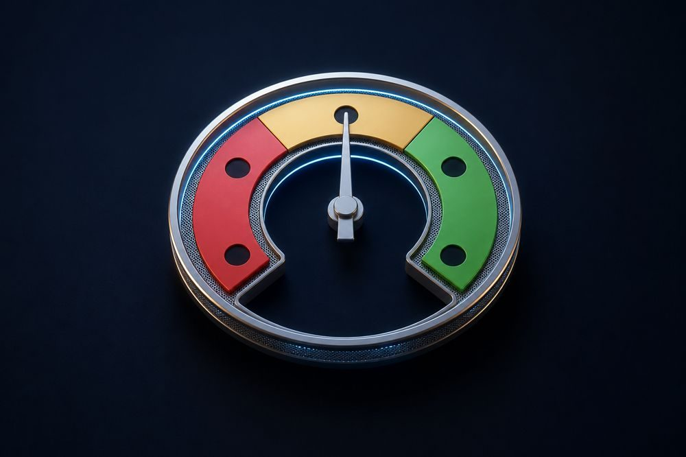

Technology investment
How do we know which departments are ready for AI?
Access is not readiness. Enthusiasm is not readiness. Readiness is what determines whether AI creates business value.

One of the most important decisions in any AI programme is deciding where to deploy first. That decision influences licence investment, rollout sequencing, resource allocation, and ultimately the business value an organisation is able to realise.
Access and enthusiasm can both be encouraging signals, but neither indicates whether a team is ready to integrate AI into everyday work.
Access, enthusiasm, and readiness are different measures
A department may have full access to AI without integrating it into day-to-day workflows.
Another may respond positively during training yet require additional organisational support before new ways of working become established.
Neither access nor enthusiasm, on their own, predicts business value.
Readiness is a team’s capacity to convert AI access into sustained changes in the way work is performed.
Many deployment measures focus on implementation milestones, such as licences issued, systems deployed, and training completed. These indicators are valuable, but they do not necessarily show whether teams are prepared to translate AI access into measurable business outcomes.
From confidence to evidence
When readiness is visible, deployment decisions become more precise.
Rather than deploying uniformly across the organisation, leaders can sequence investment according to where readiness is strongest, while addressing barriers before expanding further.
The DRIVE™ Adaptability Diagnostic provides department-level readiness evidence before additional AI investment is committed. This enables rollout decisions to reflect organisational conditions rather than assuming every team will adopt AI at the same pace.
The decision this informs
The decision is not simply: “Should this department receive AI next?”
The more valuable question is: “Is this department ready to convert AI access into measurable business value?”
Readiness evidence enables organisations to prioritise investment where business value is most likely, address barriers where they remain, and sequence deployment with greater confidence.